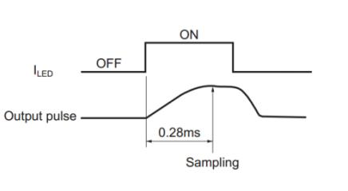
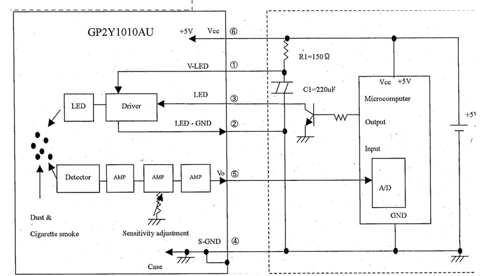

PM2.5空气传感器
功能简介
检测空气中灰尘浓度，当有大量灰尘颗粒进入通气孔时，浓度发生明显变化，用于空气净化器、空气质量监测仪、PM2.5检测仪等。
工作原理
1) 通过设置模块 ILED 引脚为高电平，从而打开传感器内部红外二极管。
2) 等待 0.28ms，外部控制器采样模块 AOUT 引脚的电压值。这是因为传感器内部红外二极管在开启之后 0.28ms，输出波形才达到稳定。如下图所示：

3) 采样持续 0.04ms 之后，再设置 ILED 引脚为低电平，从而关闭内部红外二极管。
4) 根据电压与浓度关系即可计算出当前空气中的灰尘浓度。
PS:输出的电压经过了分压处理，要将测得的电源放大11倍才是实际传感器输出的电压。
实物及型号照片
GP2Y1010AU0F

电路图

接线图
| 模块 | 开发板 |
|---|---|
| VCC | 3.3V或5V |
| GND | GND |
| AOUT | A0 |
| ILED | D7 |
性能描述
1.关于无尘时输出电压（Vcc(V)）在没有灰尘，烟的状况下的输出电压，有规定的最大值。
2.关于输出电压的最大电压，有规定的最小值。
3.粉尘浓度0.1mg/m*m*m变化时的输出电压的变化，有规定的最小值和最大值。粉尘时根据MILD SEVEN香烟的烟做的数据。
基本驱动代码
/*******************************************************************************
* Function Name : static void _GP2Y_HardInit(void)
* Description : Initialize Hardware
1. PA.6 ADC
2. PA.7 ILED
* Input : None
* Output : None
* Return : None
* Attention : None
*******************************************************************************/
static void _GP2Y_HardInit(void)
{
ADC_InitTypeDef ADC_InitStructure;
GPIO_InitTypeDef GPIO_InitStructure;
/*Clock enable*/
RCC_APB2PeriphClockCmd(RCC_APB2Periph_ADC1 | RCC_APB2Periph_GPIOA | RCC_APB2Periph_AFIO, ENABLE);
/* Configure PA.06 (ADC Channel6) as analog input -------------------------*/
GPIO_InitStructure.GPIO_Pin = GPIO_Pin_6;
GPIO_InitStructure.GPIO_Speed = GPIO_Speed_50MHz;
GPIO_InitStructure.GPIO_Mode = GPIO_Mode_AIN;
GPIO_Init(GPIOA, &GPIO_InitStructure);
/* Configure PA.07 as digital output */
GPIO_InitStructure.GPIO_Pin = GPIO_Pin_7;
GPIO_InitStructure.GPIO_Speed = GPIO_Speed_50MHz;
GPIO_InitStructure.GPIO_Mode = GPIO_Mode_Out_PP;
GPIO_Init(GPIOA, &GPIO_InitStructure);
GPIO_ResetBits(GPIOA, GPIO_Pin_7); //default low, ILED closed
/* ADC1 configuration ------------------------------------------------------*/
ADC_InitStructure.ADC_Mode = ADC_Mode_Independent;
ADC_InitStructure.ADC_ScanConvMode = DISABLE;
ADC_InitStructure.ADC_ContinuousConvMode = DISABLE;
ADC_InitStructure.ADC_ExternalTrigConv = ADC_ExternalTrigConv_None;
ADC_InitStructure.ADC_DataAlign = ADC_DataAlign_Right;
ADC_InitStructure.ADC_NbrOfChannel = 1;
ADC_Init(ADC1, &ADC_InitStructure);
/* ADC1 regular channel6 configuration */
ADC_RegularChannelConfig(ADC1, ADC_Channel_6, 1, ADC_SampleTime_239Cycles5);
/* Enable ADC1 */
ADC_Cmd(ADC1, ENABLE);
/* Enable ADC1 reset calibaration register */
ADC_ResetCalibration(ADC1);
/* Check the end of ADC1 reset calibration register */
while(ADC_GetResetCalibrationStatus(ADC1));
/* Start ADC1 calibaration */
ADC_StartCalibration(ADC1);
/* Check the end of ADC1 calibration */
while(ADC_GetCalibrationStatus(ADC1));
}
/*******************************************************************************
* Function Name : static void _GP2Y_Wait(void)
* Description : wait 0.28ms
* Input :
* Output : None
* Return : ADC value
* Attention : None
*******************************************************************************/
static void _GP2Y_Wait(void)
{
CM3_SysTickDelayUS(280);
}
/*******************************************************************************
* Function Name : static vu32 _GP2Y_GetADCValue(void)
* Description :
* Input :
* Output : None
* Return : ADC value
* Attention : None
*******************************************************************************/
static vu32 _GP2Y_GetADCValue(void)
{
GPIO_SetBits(GPIOA, GPIO_Pin_7);
_GP2Y_Wait();
/*Start once cov*/
ADC_SoftwareStartConvCmd(ADC1, ENABLE);
while(ADC_GetFlagStatus(ADC1, ADC_FLAG_EOC) != SET)
;
ADC_ClearFlag(ADC1, ADC_FLAG_EOC);
GPIO_ResetBits(GPIOA, GPIO_Pin_7); //default low, ILED closed
return _filter(ADC_GetConversionValue(ADC1));
}
/*******************************************************************************
* Function Name : static float _GP2Y_ADCValue2Voltage(vu32 Value)
* Description : value -> Voltage
* Input : ADC value
* Output : None
* Return : voltage, unit: v
* Attention : None
*******************************************************************************/
static float _GP2Y_ADCValue2Voltage(vu32 Value)
{
float Temp;
Temp = (3300 / 4096.0) * Value * 11;
return Temp;
}
/*******************************************************************************
* Function Name : static float _GP2Y_DataProcess(float Voltage)
* Description : Voltage -> Dust density
* Input : Voltage: Sensor output voltage, unit: v
* Output : None
* Return : Dust density, unit: ug/m*m*m
* Attention : None
*******************************************************************************/
static float _GP2Y_DataProcess(float Voltage)// Êý¾ÝÖØ×é µçѹ
{
if(Voltage >= NO_DUST_VOLTAGE)
{
Voltage -= NO_DUST_VOLTAGE;
return (Voltage * COV_RATIO);
}
else
return 0;
}
/*******************************************************************************
* Function Name : static int _filter(int m)
* Description :
* Input :
* Output : None
* Return :
* Attention : None
*******************************************************************************/
static int _filter(int m)
{
static int flag_first = 0, _buff[10], sum;
const int _buff_max = 10;
int i;
if(flag_first == 0)
{
flag_first = 1;
for(i = 0, sum = 0; i < _buff_max; i++)
{
_buff[i] = m;
sum += _buff[i];
}
return m;
}
else
{
sum -= _buff[0];
for(i = 0; i < (_buff_max - 1); i++)
{
_buff[i] = _buff[i + 1];
}
_buff[9] = m;
sum += _buff[9];
i = sum / 10.0;
return i;
}
}
/*******************************************************************************
* Function Name : void GP2Y_Init(void)
* Description : 1. Initialize Hardware
* Input :
* Output : None
* Return : None
* Attention : None
*******************************************************************************/
void GP2Y_Init(void)
{
_GP2Y_HardInit();
}
/*******************************************************************************
* Function Name : float GP2Y_GetDensity(void)
* Description : get density
* Input :
* Output : None
* Return : density
* Attention : None
*******************************************************************************/
float GP2Y_GetDensity(void)
{
float Voltage;
Voltage = _GP2Y_ADCValue2Voltage(_GP2Y_GetADCValue());
Voltage = _GP2Y_DataProcess(Voltage);
return Voltage;
}
产品手册
1.特性和原理
本模块是以夏普 GP2Y1010AU0F 为核心的灰尘传感器。传感器内部的红外二极管，可以输出一个跟灰尘浓度成线性关系的电压值。通过该电压值即可计算出空气中的灰尘和烟尘含量。
| 测量对象： | 直径大于 0.8μm 灰尘颗粒 |
|---|---|
| 有效量程： | 500μg/m3 |
| 输出类型： | 电压模拟量 |
| 工作电压： | 2.5V~5.5V |
| 产品尺寸： | 63.2mm×41.3mm |
| 固定孔尺寸： | 2.0mm |
| 通气孔尺寸： | 9.0mm |
1.1传感器输出特性
传感器输出电压与灰尘浓度关系在 0 到 0.5mg/m3 范围内成线性关系，如下图所示：

图 1: 传感器输出特性曲线
1.2传感器控制原理
1) 通过设置模块 ILED 引脚为高电平，从而打开传感器内部红外二极管。
2) 等待 0.28ms，外部控制器采样模块 AOUT 引脚的电压值。这是因为传感器内部红外二极管在开启之后 0.28ms，输出波形才达到稳定。如下图所示： 图 2: ILED 与红外二极管输出波形关系
3) 采样持续 0.04ms 之后，再设置 ILED 引脚为低电平，从而关闭内部红外二极管。
4) 根据电压与浓度关系即可计算出当前空气中的灰尘浓度，具体实现细节请参考Demo 程序。
注：输出的电压经过了分压处理（查看原理图），要将测得的电源放大 11 倍才是实际传感器输出的电压。
图 2: ILED 与红外二极管输出波形关系
3) 采样持续 0.04ms 之后，再设置 ILED 引脚为低电平，从而关闭内部红外二极管。
4) 根据电压与浓度关系即可计算出当前空气中的灰尘浓度，具体实现细节请参考Demo 程序。
注：输出的电压经过了分压处理（查看原理图），要将测得的电源放大 11 倍才是实际传感器输出的电压。
1.3主要用途
检测空气中灰尘浓度，用于空气净化器、空气质量监测仪、PM2.5 检测仪等。
2.操作和现象
2.1传感器接口说明
| 引脚号 | 标识 | 描述 |
|---|---|---|
| 1 | VCC | 电源正(2.5V-5.5V) |
| 2 | GND | 电源地 |
| 3 | AOUT | 电压模拟量输出 |
| 4 | ILED | 传感器内部 LED 驱动 |
表 1: 传感器接口说明
2.2.连接开发板使用
下面章节以四款不同类型的开发板为例，描述具体操作步骤及实验现象。
2.2.1.Open103R（主控芯片STM32F103R）
1) 编译下载 Demo 程序。
2) 通过串口模块，把开发板 USART2 接口连接至电脑，串口调试助手设置如下：
| 波特率 | 115200 |
|---|---|
| 数据位 | 8 |
| 停止位 | 1 |
| ------ | ---- |
| 校验位 | None |
| 流控制 | None |
3) 传感器模块连接如下：
| 模块 | 开发板 |
|---|---|
| VCC | 3.3V 或 5V |
| GND | GND |
| AOUT | GPIOA.6 |
| ILED | GPIOA.7 |
表 2: 传感器和 Open103R 引脚对应关系
4) 开发板上电，可看到串口助手不断显示当前灰尘浓度值，当有大量灰尘颗粒进入通气孔时，数据发生明显变化，实验现象见附录。
2.2.2. Open407Z-C（主控芯片STM32F407Z）
1) 编译下载 Demo 程序。
2) 通过串口模块，把开发板 USART2 接口连接至电脑，串口调试助手设置如下：
| 波特率 | 115200 |
|---|---|
| 数据位 | 8 |
| 停止位 | 1 |
| 校验位 | None |
| 流控制 | None |
3) 传感器模块连接如下：
| 模块 | 开发板 |
|---|---|
| VCC | 3.3V 或 5V |
| GND | GND |
| AOUT | GPIOA.6 |
| ILED | GPIOA.7 |
表 3: 传感器和 Open407Z-C 引脚对应关系
4) 开发板上电，可看到串口助手不断显示当前灰尘浓度值，当有大量灰尘颗粒进入通气孔时，数据发生明显变化，实验现象见附录。
2.2.3NUCLEO-F103RB（主控芯片STM32F103R）
本开发板Demo 程序分为Mbed 及ST Library 两个版本。操作步骤及实验现象相同。
1) 编译下载 Demo 程序。
2) 将开发板通过 USB 接口连接至电脑，串口调试助手设置如下：
| 波特率 | 115200 |
|---|---|
| 数据位 | 8 |
| 停止位 | 1 |
| ------ | ---- |
| 校验位 | None |
| 流控制 | None |
3) 传感器模块连接如下：
| 模块 | 开发板 |
|---|---|
| VCC | 3.3V 或 5V |
| GND | GND |
| AOUT | A0 |
| ILED | D7 |
表 4: 传感器和 XNUCLEO-F103RB 引脚对应关系
4) 开发板上电，可看到串口助手不断显示当前灰尘浓度值，当有大量灰尘颗粒进入通气孔时，数据发生明显变化，实验现象见附录。
2.2.4Arduino UNO
1) 编译下载 Demo 程序
2) 将开发板通过 USB 接口连接至电脑，串口调试助手设置如下：
| 波特率 | 9600 |
|---|---|
| 数据位 | 8 |
| 停止位 | 1 |
| 校验位 | None |
| 流控制 | None |
3) 传感器模块连接如下：
| 模块 | 开发板 |
|---|---|
| VCC | 3.3V 或 5V |
| GND | GND |
| AOUT | A0 |
| ILED | D7 |
表 5: 传感器和 UNO PLUS 引脚对应关系
4) 开发板上电，可看到串口助手不断显示当前灰尘浓度值，当有大量灰尘颗粒进入通气孔时，数据发生明显变化，实验现象见附录。
3.附录：
3.1.实验现象
串口打印灰尘浓度数据：
空气污染指数分级标准如下表所示：
| PM2.5浓度均值(μg/m3) | 空气质量AQI | 空气质量级别 | 空气质量指数类别 |
|---|---|---|---|
| 0-35 | 0-50 | 一级 | 优 |
| 35-75 | 51-100 | 二级 | 良 |
| 75-115 | 101-150 | 三级 | 轻度污染 |
| 115-150 | 151-200 | 四级 | 中度污染 |
| 150-250 | 201-300 | 五级 | 重度污染 |
| 250-500 | ≥300 | 六级 | 严重污染 |
表 6: 空气污染指数分级标准
作者
李毅飞